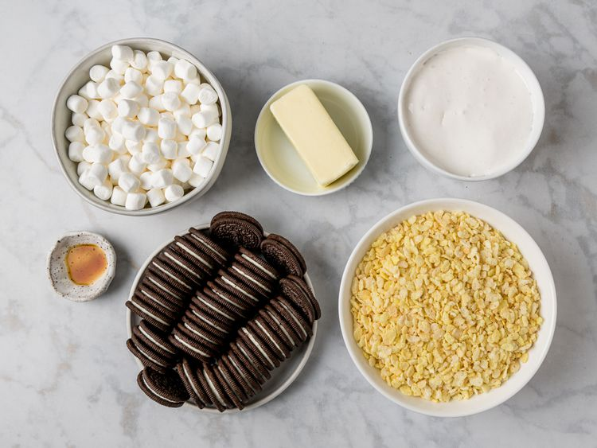
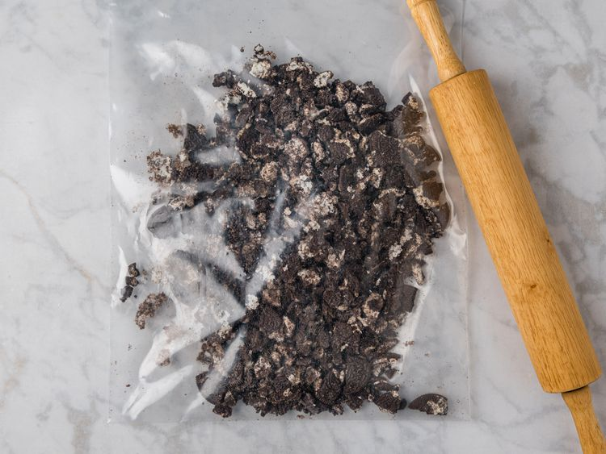
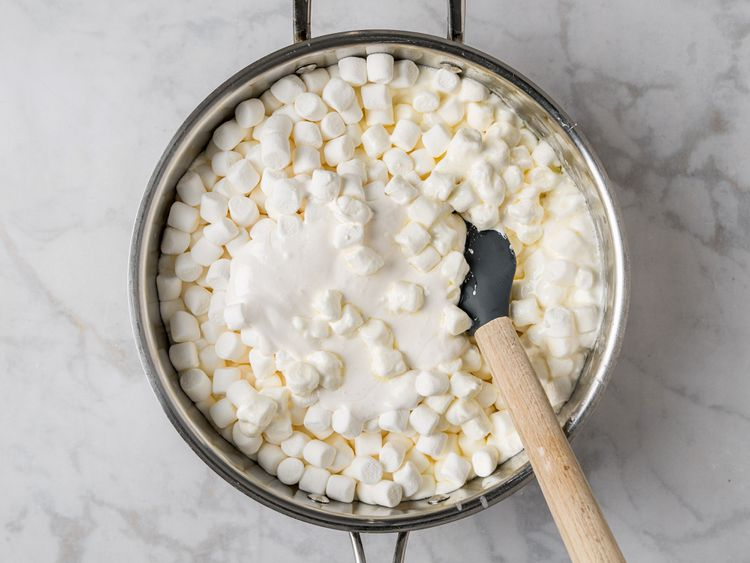
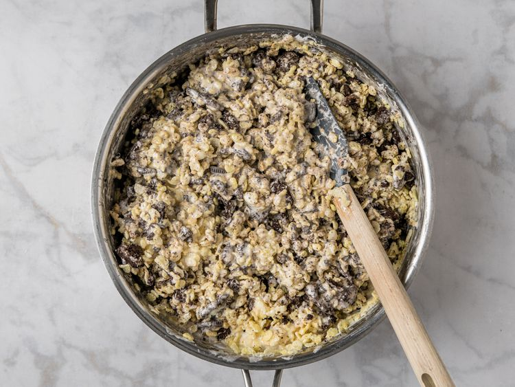
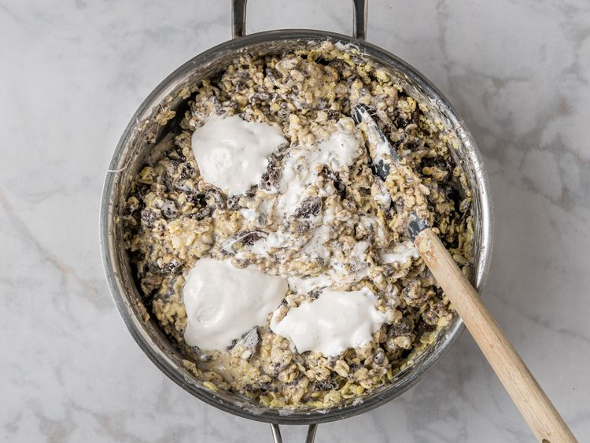
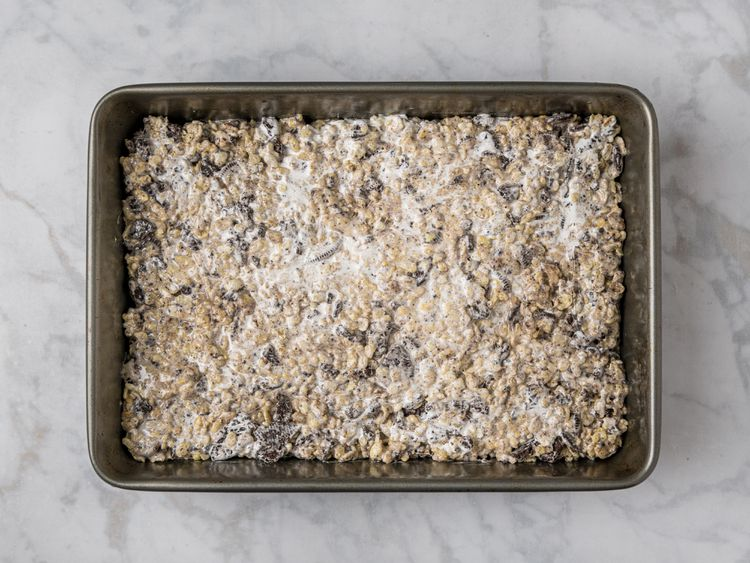
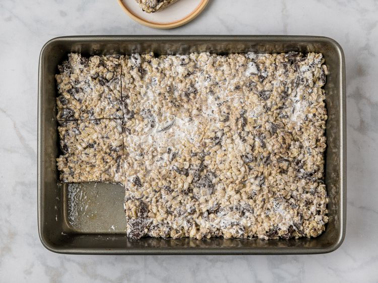

There’s no easier or more comforting dessert than a buttery, gooey Rice Krispie treat. In this recipe, crushed chocolate and cream cookies are folded into to the mix, adding even more texture and flavor in each bite. Take care not to over-mix once you add the cookies—that’s key to getting the dreamiest ribbons (and ultimate gooeyness) throughout!
Gather all ingredients. Grease a 9 x 13 inch pan with nonstick spray.

Place the cookies in a resealable bag and use a rolling pin to coarsely crush them–the goal is to end up with mostly larger, bite-sized pieces and less powdery bits (some is ok).

Melt butter in a large pot over medium heat. Add mini marshmallows and 1/2 the marshmallow cream. Reduce heat to medium-low, and stir well with a silicone spatula to melt the marshmallows and combine the mixture evenly. Stir in vanilla extract.

Remove mixture from the heat. Add cereal and the powdery portion of the crushed cookies, and stir well to combine. Add larger crushed cookie pieces, and mix to combine.

Dollop about half of the remaining marshmallow cream over the surface of the mixture, and fold a few times to partially incorporate it. Dollop the rest of the marshmallow cream over the surface, and fold a few more times to partially incorporate it. There should be visible streaks of marshmallow cream throughout the mixture.

Pour mixture into the prepared pan, and use a spatula to push it into an even layer and compress it slightly.

Let the pan sit at room temperature to firm up, 30 minutes to 1 hour, before slicing and serving. Store the pan tightly wrapped in plastic wrap at room temperature. They’re gooiest in the first 24 hours, but will keep well for up to 5 days.
